Advanced machine learning
From LLM to RAG and agents
Alex Avdiushenko
April 30, 2025
Lecture Plan
- Retrieval-Augmented Generation
- Vector DB-based
- Knowledge Graph-based
- Knowledge Map-based
- Using Long Contexts and SSMs
- Agents
Problems
- Accuracy issues:
- Knowledge cutoffs: parameters are usually only updated to a particular time
- Private data: data stored in private text or data repositories not suitable for training
- Learning failures: even for data that the model was trained on, it might not be enough to get the right answer
- Verifiability issues: It is hard to tell if the answer is correct
OpenAI's pricing

3 Ways to Improve Your LLM
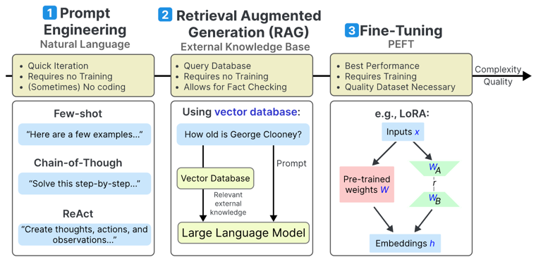Source: https://www.maartengrootendorst.com/blog/improving-llms/
RAG process flow
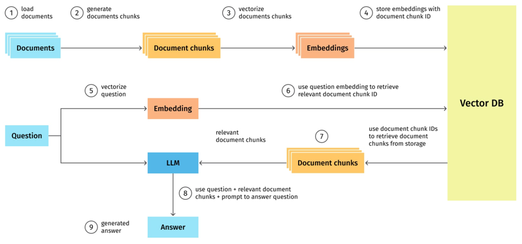Document splitting

Semantic proximity of sentences
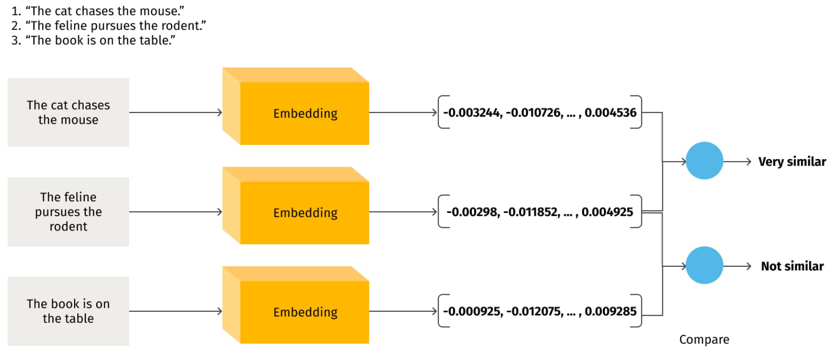Vector DBs
Document retrieval
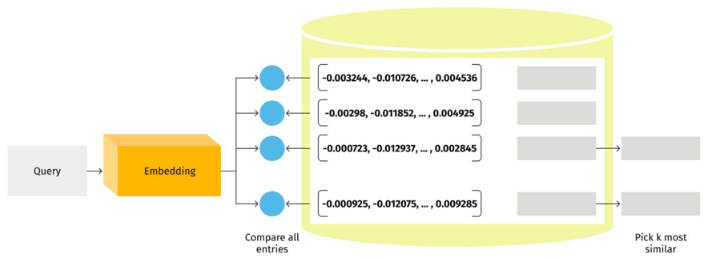Answer generation
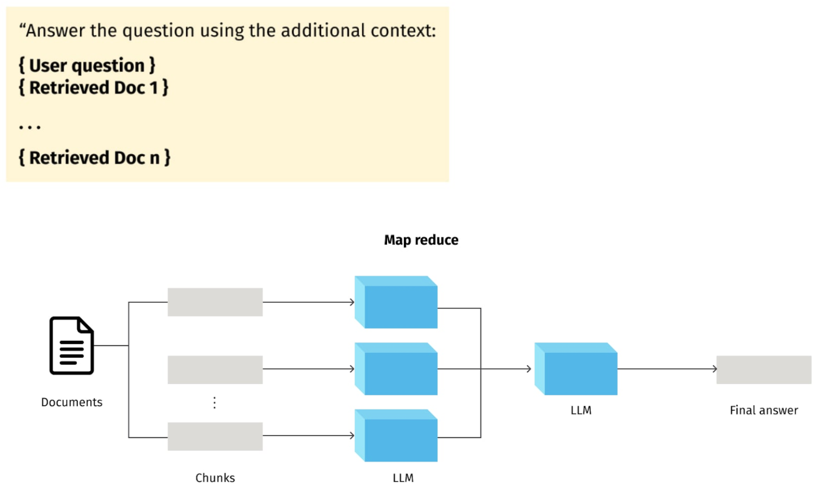RAG Survey: [Gao et al. 2023]
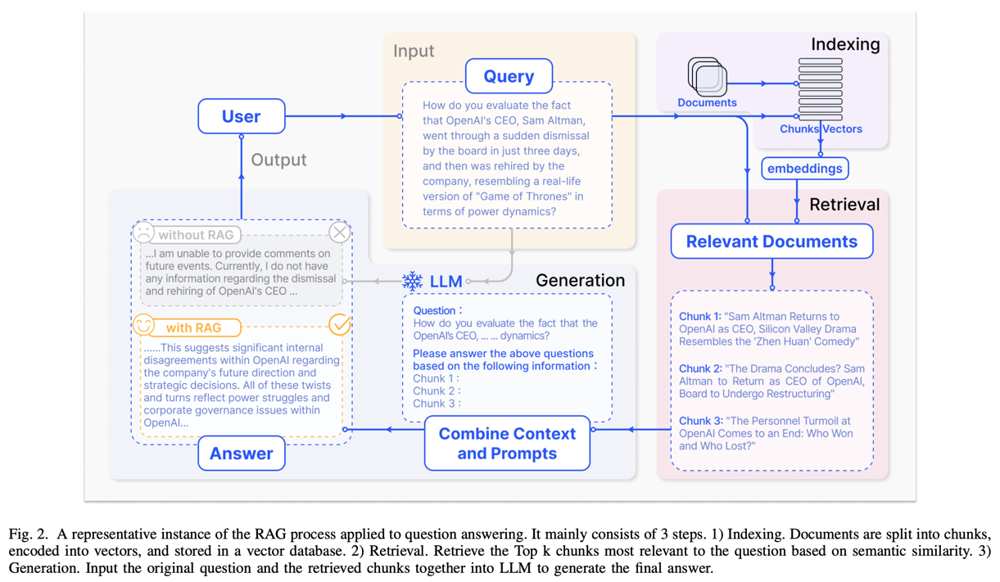
When do we Retrieve?
- Once, at the beginning of generation
- Default method used by most systems [Lewis et al. 2020]
- Several times during generation, as necessary
- Generate a search token (Toolformer) [Schick et al. 2023]
- Search when the model is uncertain (Active RAG) [Jiang et al. 2023]
- Every token
- Find similar final embeddings [Khandelwal et al. 2019]
- Approximate attention with nearest neighbors (Unlimiformer) [Bertsch et al. 2023]
Effectively Using Long Contexts

The State Space Model (SSM)
The continuous state space model (SSM) is a fundamental representation defined by two simple equations:
$$ \begin{align*} x'(t) &= A x(t) + B u(t)\\ y(t) &= C x(t) + D u(t) \end{align*} $$Here the input \(u(t)\) is a 1-dimensional signal, the state \(x(t)\) is a $N$-dimensional latent representation satisfying a linear ODE, and the output \(y(t)\) is a simple 1-dimensional projection of the state.
Here \( A \in \mathbb{R}^{N \times N} \) is called the state matrix, and the other parameter shapes are \( B \in \mathbb{R}^{N \times 1}, C \in \mathbb{R}^{1 \times N}, D \in \mathbb{R}^{1 \times 1} \).
- The SSM is a fundamental representation used in many scientific and engineering disciplines
- Conventionally in these areas, the system parameters \( A, B, C, D \) are assumed to be latent (i.e. fixed)
- We simply use the state space as a black box representation in the spirit of deep learning, where we view an SSM as a function-to-function map parameterized by parameters \( A, B, C, D \)
Three Representations of SSM
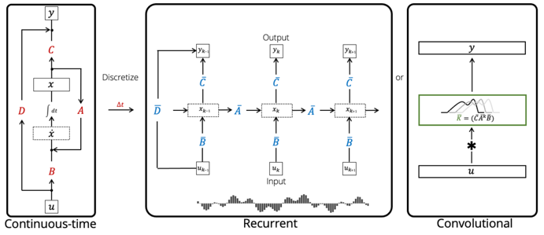Mamba: Selective State Spaces
- Many flavors of SSMs have been successful in domains involving continuous signal data such as audio and vision, but they have been less effective at modeling discrete and information-dense data such as text
- Authors propose a new class of selective state space models that achieve the modeling power of Transformers while scaling linearly in sequence length
- We need the ability to focus on or ignore particular inputs, selectivity
Mamba: Linear-Time Sequence Modeling with SSS, Gonzo ML (in Russian)
Jamba: SSM-Transformer Hybrid
- The first production-grade Mamba-based open model (Apache 2.0)
- Joint Attention and Mamba (Jamba) architecture. Composed of Transformer, Mamba, and mixture-of-experts (MoE) layers
- 12B active weights of 52B MoE weights, 256K context window
- Low memory footprint. Fits 140K context on a single A100 80 GB GPU
- High throughput, competitive quality

Unifying Large Language Models and Knowledge Graphs: A Roadmap
Shirui Pan, Senior Member, IEEE, Linhao Luo, Yufei Wang, Chen Chen, Jiapu Wang, Xindong Wu, Fellow, IEEE
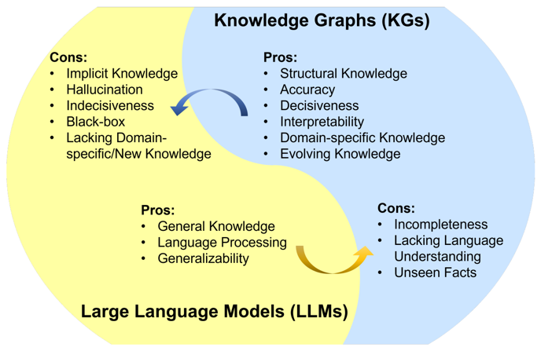Categorization of research on KGs
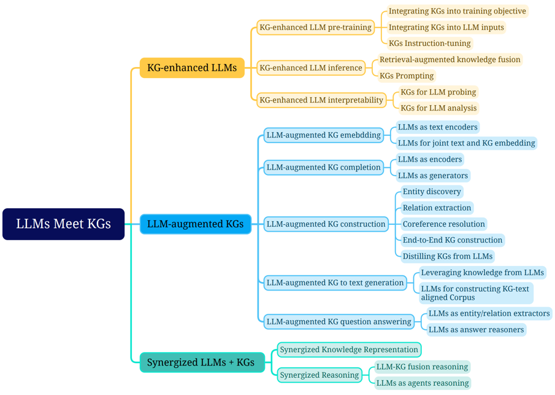Fine-Tuning with Knowledge Graph
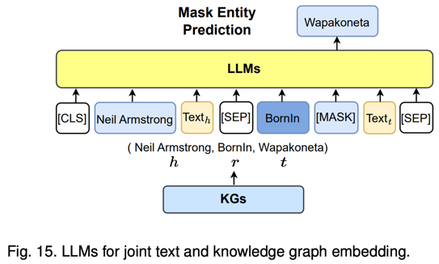AI-Powered Knowledge Maps for Navigating Unstructured Data
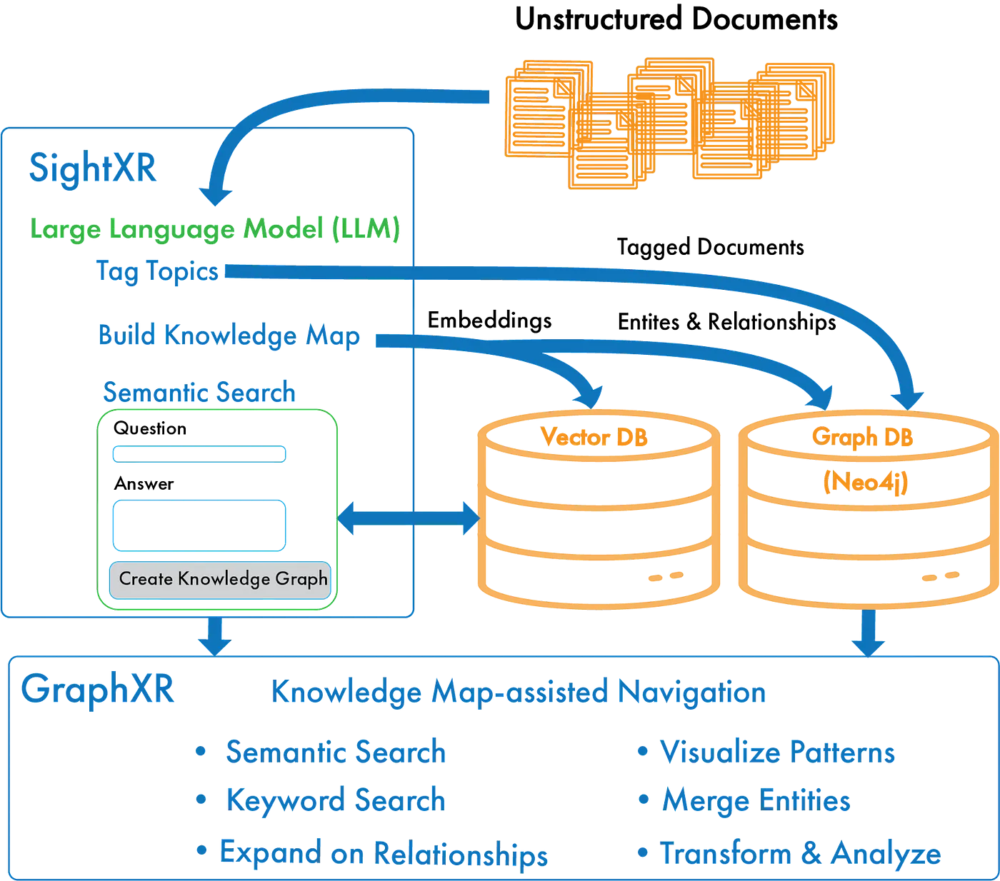Knowledge Maps: Easy to Optimize
- In a vector-based database, it is impossible to check the quality of the data segmentation, as it consists exclusively of numerical values
- However, if you present a knowledge map to a domain expert who has no technical knowledge, it can be understood and corrected immediately
- With this approach, improvements can be made with very little effort in a short time, and the system can be adapted more closely to business needs. In contrast to vector-based RAGs, which do not have the ability to "learn," this approach makes it easier to continuously adapt and improve the system
MindMap: Knowledge Graph Prompting Sparks Graph of Thoughts in Large Language Models
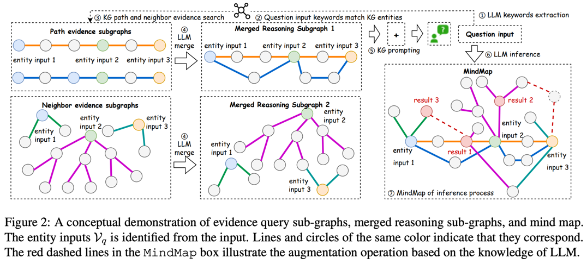Method
We show the framework of MindMap, which comprises three main parts:
- Evidence graph mining: We begin by identifying the set of entities \(V_q\) from the raw input and query the source KG \(G\) to build multiple evidence subgraphs \(G_q\)
- Evidence graph aggregation: Next, LLMs are prompted to comprehend and aggregate the retrieved evidence subgraphs to build the reasoning graphs \(G_m\)
- LLM reasoning on the mind map: Last, we prompt LLMs to consolidate the built reasoning graph and their implicit knowledge to generate the answer and build a mind map explaining the reasoning process
LLM agents are set to be the upcoming breakthrough
- Foundation of LLMs
- Reasoning
- Planning, tool use
- LLM agent infrastructure
- Retrieval-augmented generation
- Code generation, data science
- Multimodal agents, robotics
- Evaluation and benchmarking on agent applications
- Privacy, safety, and ethics
- Human-agent interaction, personalization, alignment
- Multi-agent collaboration
Source: yusu substack
Video on speech agents
Source: GitHub talk Llama-fast
LLM-powered Autonomous Agent System

Summary
-
Retrieval-Augmented Generation (RAG)
- Combines large language models (LLMs) with external document retrieval, enhancing performance
- Challenges include indexing, retrieval precision, and maintaining relevance in long context windows
-
Vector and Knowledge Graph-Based Retrieval
- Vector databases like FAISS, Milvus, and ElasticSearch enable fast similarity search in high-dimensional spaces
- Knowledge Graphs (KGs) can enhance retrieval by embedding structural and relational data into LLM contexts
- MindMap is a recent technique using KGs for structured retrieval and reasoning within LLMs
-
Sparse Mixture-of-Experts (SMoE) and SSM
- MoEs reduce computation by selectively activating certain model parts (experts) during inference
- Jamba, a hybrid model, combines transformers with SSMs and MoE layers for long-sequence efficiency
- Complex to implement and tune but provides excellent efficiency gains in large-context applications
-
LLM Agents
- LLM agents leverage retrieval, memory, and planning tools for automated, goal-oriented tasks
- Examples include CodeInterpreter, search tools, calculators, and agents for multimodal tasks
- Challenges: complex interactions between tools, planning inefficiencies, and agent alignment